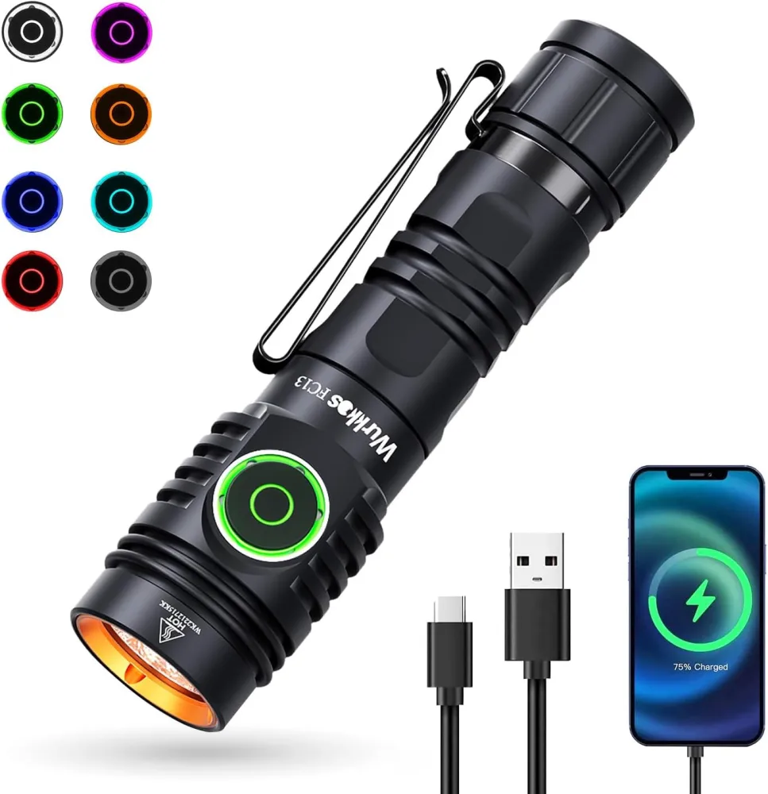
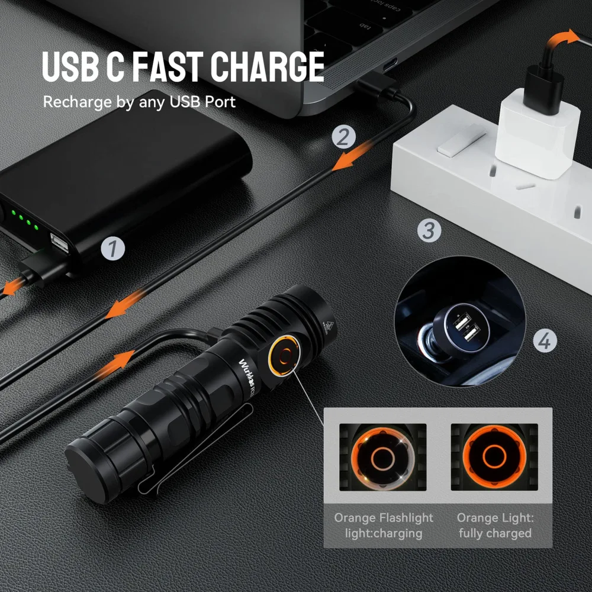
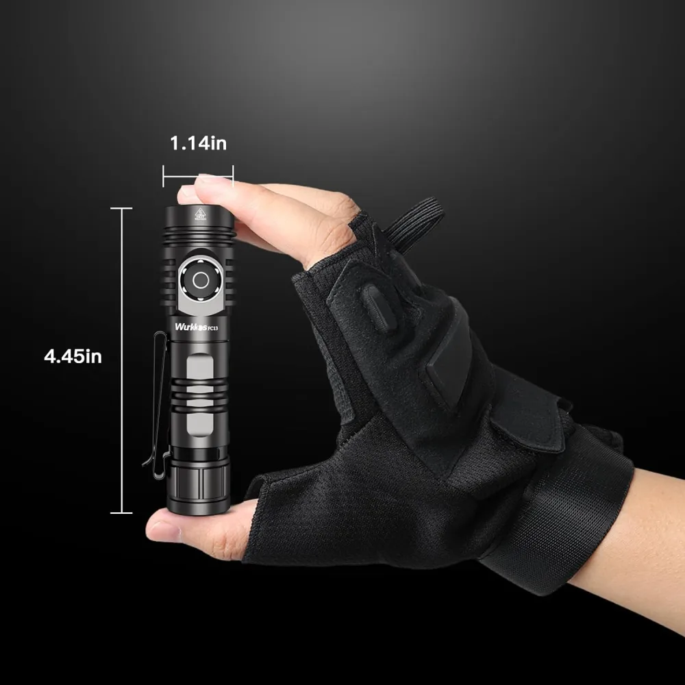
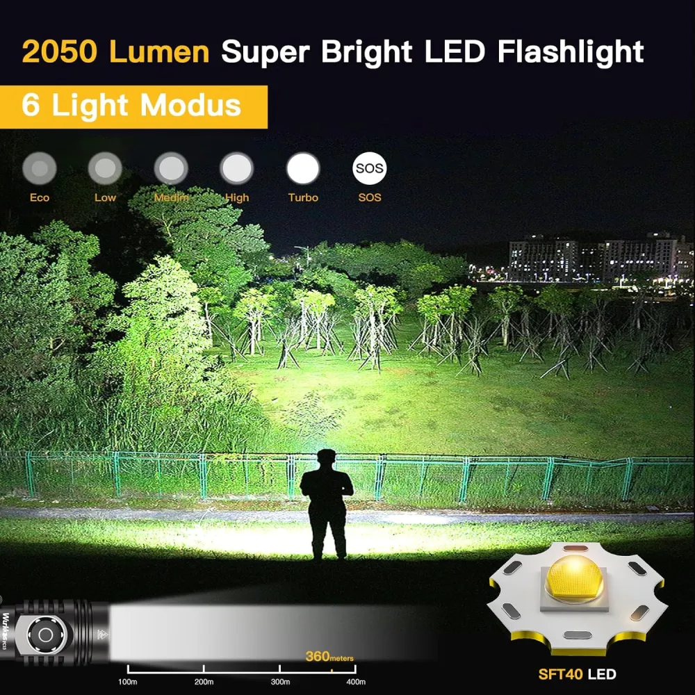

⏱ 8 min read
Wurkkos · 18650 EDC · Reviewed: 2026-05-24
Wurkkos FC13 Review — Anduril 2 in an 18650 With a Power Bank Built In
A budget-tier 18650 that quietly stole feature ground from premium-tier EDC lights — community-synthesis verdict after years of BLF and r/flashlight discussion.

Image: Wurkkos FC13 manufacturer product composite via Wurkkos official FC13 product page (manufacturer CDN, downloaded for local hosting). Cropped/sized for review use under fair-use review/commentary.
Affiliate disclosure: As an Amazon Associate I earn from qualifying purchases. The Buy links at the bottom of this review are Amazon product links — once the Amazon Associates application for this site is approved, an affiliate tag will be inserted into each link. This review is not sponsored.
TL;DR
Verdict: The FC13 is the community's pick for "most features per dollar in an 18650 Anduril 2 light." Reverse charging (power-bank function), RGB aux LED, USB-C, and included clip at a budget price point that BLF members consistently flag as punching above its tier.
Best for: Anduril 2 entry-level buyers who want every feature in one package — the FC13 isn't the best at any single thing, but it's surprisingly good at all of them.
Skip if: You want high-CRI tint (no current FC13 variant exceeds ~70 CRI — the "90 CRI variant" doesn't exist for this light, despite some catalog confusion with the FC11 sibling), or you need sustained turbo output for more than ~2 minutes.
What you need to buy together: The FC13 ships with a Wurkkos 18650 cell included — adequate for casual use. For the XHP50B variant on turbo, a Samsung 30Q or LG HG2 unlocks measurably more output (see "Where to buy" at the bottom).
ZeroAir measured ~3800 lm at start; significant thermal stepdown within 1-2 minutes. Sustained output well below turbo.
Peak candela
11,500 cd
Throw ~214 m (XHP50B). The SFT40 variant trades flood for ~360 m throw at lower 2000 lm output.
Battery
1× 18650 (standard, button-top)
Cell included (Wurkkos 3000 mAh). Standard 18650 — accepts Samsung 30Q, Sony VTC6, LG HG2, Molicel P26A. Do NOT use 21700 cells (won't fit; the FC13 is 18650-only, unlike its larger Sofirn IF25A neighbor).
IP rating
IP68
Rated to 2 m submersion. Higher rating than IPX8 lights (IP68 tests dust ingress + water; IPX8 is water-only).
Weight
77 g (without cell)
~125 g with cell installed. Lighter than the IF25A (~170 g with 21700) but slightly heavier than the SC31 Pro (~110 g with cell).
Length × diameter
113.7 mm × 29 mm head
The 29 mm head is the largest of the budget 18650 trio — limits sustained thermal capacity vs. the 25 mm SC31 Pro head.
Charging
USB-C, built-in
5V/2.4A input. ~2.5-3 hours to full from empty.
Reverse charging
Yes — functions as USB power bank
Output under 2 A recommended. The defining FC13 feature most other 18650 lights don't offer at this price.
UI
Anduril 2.0
Same UI family as Sofirn IF25A, SC31 Pro, Emisar D4V2. Steep learning curve, extremely customizable.
Aux LED
RGB multicolor switch backlight
Configurable. High setting drains the cell in under 30 days — community advice is universal: set it to dim or off immediately after first boot.
CRI
~70 (all current SKUs)
No high-CRI variant currently produced. The discontinued SFN43 measured ~73 CRI at 7200K. If you need high-CRI, look at the Sofirn IF25A 4000K/95 CRI option instead.
Price
Check current price at the regional Amazon links in the "Where to buy" section below
Per Amazon Associates Program policy, on-site pricing is sourced via Amazon's PA-API only — static prices are not displayed here.

Image: Wurkkos FC13 USB-C fast-charge + reverse-charging feature detail via Wurkkos official FC13 product page. Cropped/sized for review use under fair-use review/commentary.

Image: Wurkkos FC13 size reference (1.14 in head × 4.45 in length, gloved-hand scale) via Wurkkos official FC13 product page. Cropped/sized for review use under fair-use review/commentary.
Site-generated infographic (HTML→PNG, EDC Lumen Log original; shared cell-compat reference reused from the IF25A review for cross-link consistency). Cell sourcing reference — the FC13 takes 18650 only (button-top or flat-top both work; XHP50B turbo pulls ~20 A peak, so high-drain cells are recommended). Do not confuse with 21700 lights like the Sofirn IF25A or Olight Baton 3 Pro Max. Avoid 9800 mAh / Ultrafire counterfeits — Li-ion chemistry caps 18650 capacity at ~3500 mAh. Cell-spec data sources: manufacturer datasheets (Samsung, Sony, Molicel) cross-referenced with Battery Mooch / BLF community testing.
4-axis rating
Build
4/5
Type-III hard anodized 6061 aluminum, clean threading, no machining defects across community reports. Gift-box packaging punches above the price tier. Minor knurling sharpness.
Runtime
3/5
Turbo is real, then aggressively brief (~1-2 minutes before stepdown). Sustained High ~500-700 lm is solid for an 18650. RGB aux LED on default high steals a cell in 30 days — configure it down before first use.
Pocketability
4/5
~125 g with cell, included reversible clip works well, 29 mm head is on the wider side but still pocket-friendly. The SC31 Pro is slightly slimmer; the FC13 trades that for the reverse-charging feature.
Value
5/5
Anduril 2 + USB-C + reverse charging + RGB aux + IP68 + included cell at the budget tier is the densest feature-per-dollar offering in the 18650 EDC segment in 2026.
Reverse charging is genuinely useful: Community consensus is that the power-bank function works as advertised under 2 A output. For trail, travel, or emergency-bag carry, this turns the light into a backup phone-topup device. No other budget 18650 light at this price tier offers it.
Anduril 2 + RGB aux + USB-C package density: Multiple BLF reviews flag this combination as the FC13's defining advantage. You're getting the full Anduril 2 feature set (ramping, stepped modes, lockout, configurable floor/ceiling, sunset mode, battery check) in a single budget-tier purchase.
SFT40 variant throws 360 m from a single 18650: Most buyers default to the XHP50B because "3500 lumens" sounds bigger, but the SFT40 trades flood for genuine outdoor-relevant throw at the same price. Underserved in YouTube reviews.
Build quality consistently surprises: ZeroAir summarized it well — "From excellent fit and finish, to the presentation/gift box it comes in... it's a tough act to follow." That's a budget-tier review describing a budget-tier light.
✗ Where it falls short
Turbo thermal stepdown is brief and physics-bound: 29 mm head on an 18650 body cannot dissipate 3500 lm for long. Sustained high-output users will be disappointed. This is not a defect — it's a hardware constraint that affects every small-head high-lumen 18650 light. The FC13 is a burst-light, not a sustained-output light.
RGB aux LED drains the cell rapidly on default high: Configuration trap that catches new owners. The aux LED's bright setting can deplete a 3000 mAh cell in under 30 days. Universal community advice: set it to dim or off immediately. Not a defect, but worth knowing before you pocket it.
Anduril 2 learning curve is steep for non-enthusiasts: 8 deep modes, unlock from lockout, configurable floor/ceiling — gifting this to someone unfamiliar with Anduril leads to fumbling. The Olight Baton 3 Pro's simple UI is the alternative for that buyer.
No high-CRI option (despite some catalog confusion): The current FC13 lineup (XHP50B, SFT40) caps at ~70 CRI. The discontinued SFN43 was 73 CRI. If your app or affiliate site lists a "90 CRI FC13 variant," that's a data error — it doesn't exist. The sibling FC11 (not FC13) has the high-CRI option.
"The FC13's actual case is feature density — Anduril 2 plus reverse charging plus RGB aux plus USB-C plus included cell at the budget tier is the densest 18650 package the community has seen at this price point in 2026."

Image: Wurkkos FC13 SFT40 throw-biased variant beam-shot marketing graphic ("2050 Lumen Super Bright LED Flashlight, 6 Light Modus") via Wurkkos official FC13 product page. Cropped/sized for review use under fair-use review/commentary.
★ Community-tracked use report
📅 Long-term FC13 patterns from BLF, ZeroAir, and Amazon reviews
Pocket placement: Community reports consistently describe the FC13 in jeans front pocket carry with the included clip. The 29 mm head is on the wider side but doesn't bulge through fabric for most pant cuts. Jacket and bag pockets are also common.
Anodizing wear: BLF long-term threads document moderate clip-contact wear after months of use — typical for budget-tier hard anodizing. No widespread reports of premature anodizing failure or thread stripping.
Cell behavior: The included Wurkkos 18650 is adequate for casual use. Community testing on Samsung 30Q or LG HG2 shows measurably higher peak output on the XHP50B variant (the driver pulls ~20 A at turbo, so high-drain cells unlock more burst). The SFT40 variant draws ~12 A — moderate-drain cells are sufficient.
Charging port: USB-C rubber flap stays seated reliably across hundreds of charge cycles per community reports. No widespread port degradation issues.
Documented edge-case issues: One BLF thread reports turbo-mode crashes on a small subset of units (cell-voltage + driver interaction); another documents specific phone/cable combinations causing mode confusion when used as a power bank. Community considers these edge cases, not widespread; Wurkkos support has been responsive on warranty claims.
Compared to SC31 Pro: Community consensus is that the SC31 Pro wins on pure pocket-EDC minimalism (slimmer body, no RGB to configure); the FC13 wins on feature density (reverse charging, RGB aux). Many enthusiasts own both. For pure-utility EDC, SC31 Pro. For "all features in one light," FC13.
Verdict
The Wurkkos FC13 is the budget 18650 EDC light that doesn't try to win any single category — it wins on package density. Anduril 2, USB-C onboard charging, reverse charging power-bank function, RGB aux LED, included cell, and IP68 sealing in a budget-tier light is a feature combination no competitor matches at this price tier in 2026. If you want every feature in one purchase, this is the light. If you want pure pocket-EDC minimalism, get the SC31 Pro instead. If you want sustained turbo output, get the 21700 IF25A. If you want high-CRI tint, look at the IF25A 4000K/95 CRI variant — the FC13 doesn't offer that option.
🛒 Where to buy
If the verdict resonated and you want to pick one up, here are the regional Amazon product links. Choose your region. Once the Amazon Associates application for this site is approved, the URLs will be updated to include an affiliate tag.
🇺🇸 Check current price on Amazon.com (US)(Amazon product link — affiliate tag pending approval) Cell (18650) included. Variants: XHP50B (5000K or 6000K, 3500 lm) or SFT40 (6000K, 2000 lm thrower).
Upgrade 18650 cells (optional, for XHP50B turbo): Samsung 30Q (3000 mAh, 15 A), LG HG2 (3000 mAh, 20 A), Sony VTC6 (3000 mAh, 30 A peak), Molicel P26A (2600 mAh, 35 A). The included Wurkkos cell is fine; high-drain alternatives unlock measurably more turbo output on the XHP50B variant. Do NOT use 21700 cells — physically won't fit. Avoid uncategorized "9800 mAh" cells — see the Ultrafire warning post.
Where the community sources 18650 cells: Illumn (not an affiliate link — a vendor the r/flashlight wiki lists for authentic cells).
Affiliate disclosure: The Amazon links above are currently non-affiliate product links. Once the Amazon Associates application for this site is approved, an affiliate tag will be inserted into each link. If/when you buy through an affiliate-tagged link, EDC Lumen Log earns a small commission at no extra cost to you. As an Amazon Associate I earn from qualifying purchases (statement preserved as required by Amazon Program Policies for the participation framework). Reviews are not paid or sponsored — see Methodology. (PR — 景品表示法準拠 / アフィリエイトタグは承認後に挿入)